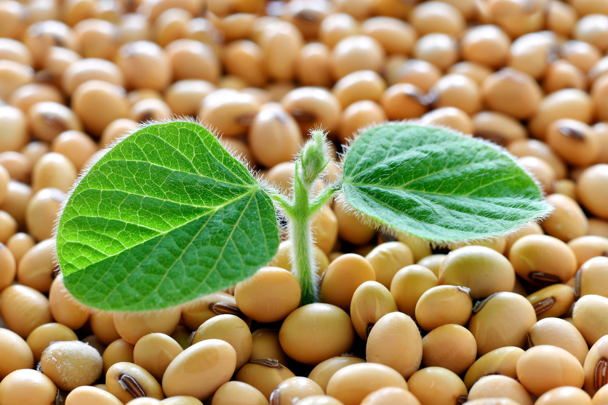

soja
A soja é uma das culturas mais importantes para o agronegócio no Brasil, sendo um dos principais produtos agrícolas do país. Ela é utilizada para a produção de óleo, ração animal, biodiesel, alimentos processados, entre outros produtos. A soja é cultivada em grande parte do território brasileiro, principalmente nos estados do Mato Grosso, Paraná, Rio Grande do Sul e Goiás. Sua produção gera emprego e renda para milhares de famílias em todo o país, além de contribuir significativamente para a economia brasileira.
O Brasil é o segundo maior produtor de soja do mundo, atrás apenas dos Estados Unidos. A produção brasileira de soja tem aumentado nos últimos anos, impulsionada pela demanda mundial pelo grão, principalmente da China, que é o principal destino das exportações brasileiras de soja.